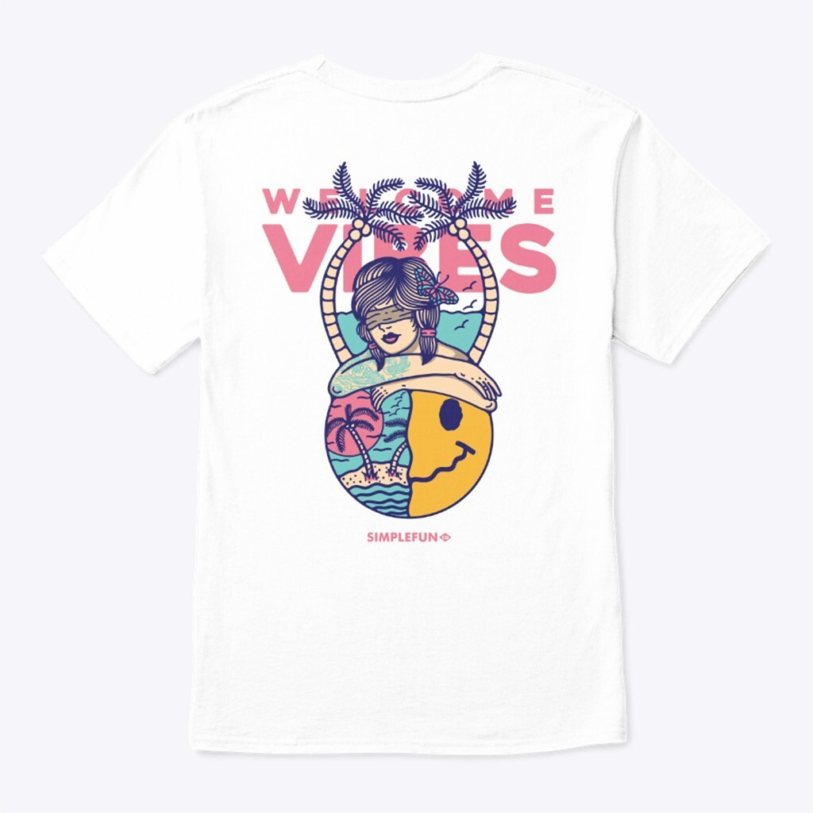
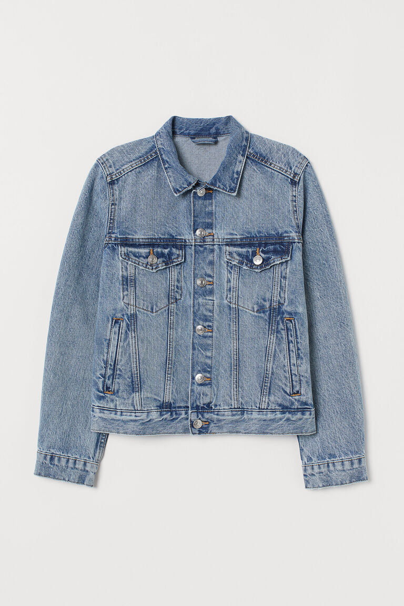
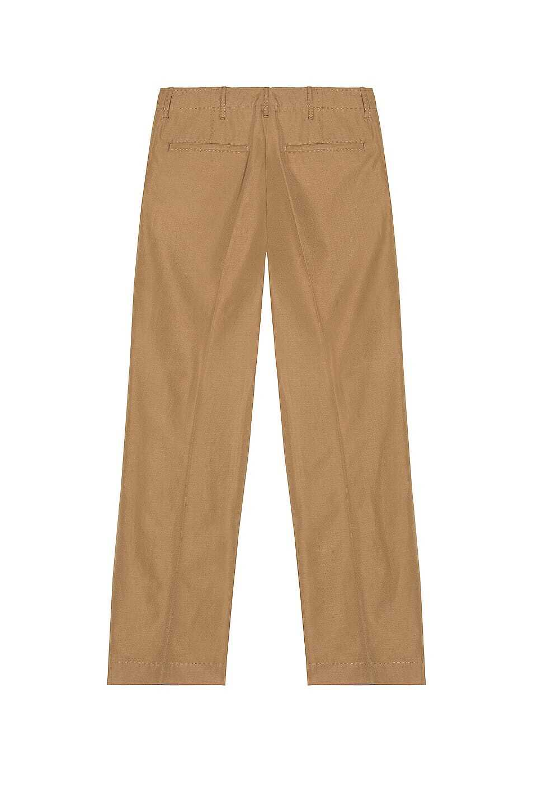
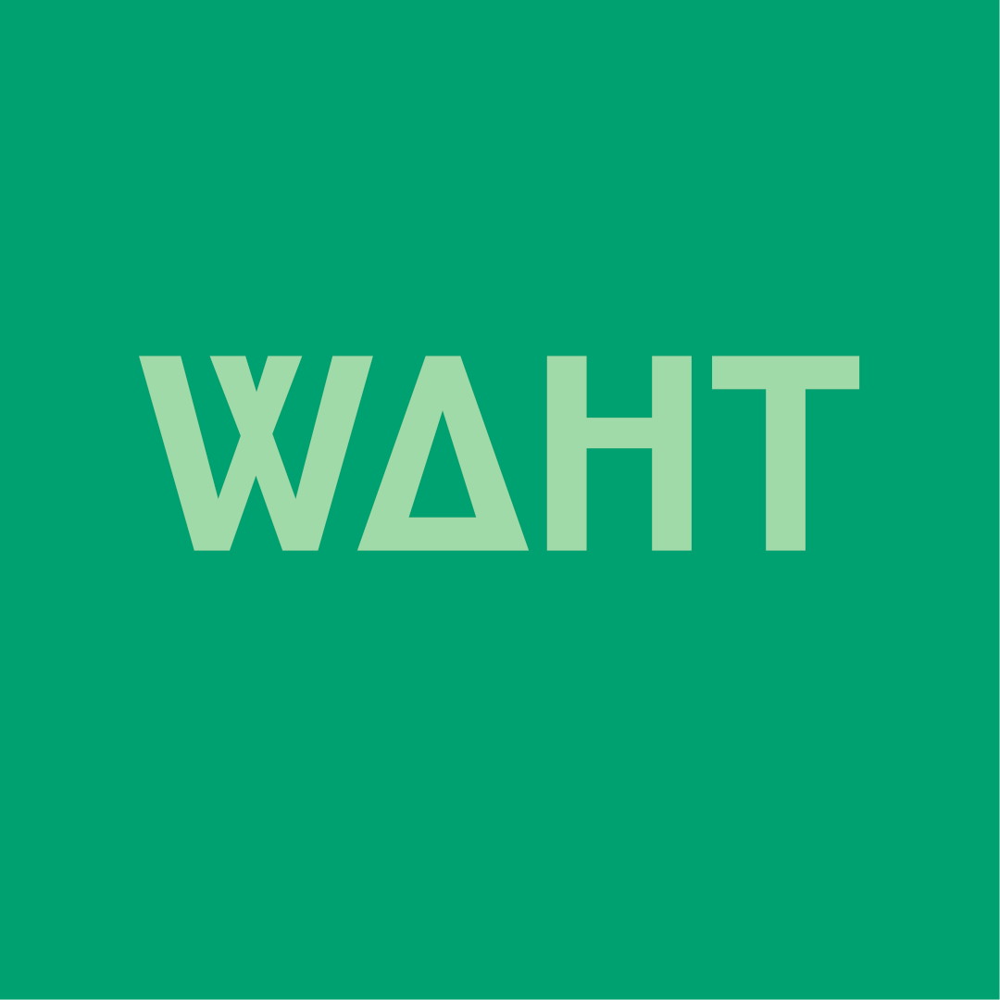

Graphic Tees
Graphic Tees merupakan salah satu produk kami, produk ini tentunya kami buat dengan mengedepankan ide-ide terbaik serta kreativitas sehingga menghasilkan desain yang baik. Bahan yang digunakan untuk produk ini tentunya merupakan bahan yang nyaman ketika dipakai, ada beberapa pilihan bahan juga mulai dari cotton comber 20s, 24s hingga 30s yang dimana makin besar angka sebelum s maka ketebalan akan semakin tipis. Produk ini dapat dibeli di beberapa marketplace dengan harga mulai dari Rp 79.000,-
Denim Jacket
Denim Jacket dari WAHT Cloth merupakan salah satu denim jacket terbaik yang ada di pasaran. Bahan yang digunakan tentunya merupakan bahan terbaik. Denim Jacket kami semakin lama akan semakin pudar warnanya dan itu akan membuat denim jacket tersebut akan semakin terlihat keren. Kami memiliki beberapa pilihan warna yaitu navy, ash grey dan black. Denim Jacket ini dapat dibeli dengan harga Rp 200.000,-
Short Chino
 Short Chino ini memiliki model slim fit dengan bahan yang stretch sehingga dapat menyesuaikan ukuran. Tentunya dibuat dengan bahan terbaik juga yang membuat kita nyaman ketika memakainya. Tersedia juga banyak pilihan warna untuk short chino kami seperti, black, navy, brown, grey, white dan beberapa warna lain. Short Chino kami ini dapat dibeli dengan harga Rp 100.000,-
Short Chino ini memiliki model slim fit dengan bahan yang stretch sehingga dapat menyesuaikan ukuran. Tentunya dibuat dengan bahan terbaik juga yang membuat kita nyaman ketika memakainya. Tersedia juga banyak pilihan warna untuk short chino kami seperti, black, navy, brown, grey, white dan beberapa warna lain. Short Chino kami ini dapat dibeli dengan harga Rp 100.000,-
Chino
Chino kami memiliki beberapa model, salah satunya sama dengan short chino dan ada juga yang pinggangnya menggunakan rubber sehingga tidak perlu menggunakan belt lagi. Warna chino ini tentunya sama banyaknya dengan short chino kami, Celana chino ini dapat dibeli dengan harga mulai dari Rp 120.000,-
WAHT Cloth
WAHT CLoth merupakan brand yang lahir dari impian seorang pemuda yang ingin membangun usahanya sendiri di bidang fashion yang tentunya 100% asli Indonesia. Brand ini didirikan pada tahun 2021. Brand ini memiliki target pasar anak muda karena kebanyakan produknya merupakan streetwear.
Bangga Buatan Bangsa
 WAHT Cloth merupakan salah satu upaya untuk semakin memajukan industri fashion di Indonesia, dengan lahirnya brand-brand seperti ini tentunya kedepannya diharapkan bahwa industri fashion Indonesia dapat merajai industri fashion dunia.
WAHT Cloth merupakan salah satu upaya untuk semakin memajukan industri fashion di Indonesia, dengan lahirnya brand-brand seperti ini tentunya kedepannya diharapkan bahwa industri fashion Indonesia dapat merajai industri fashion dunia.